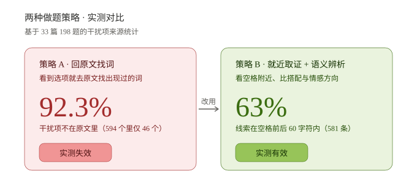
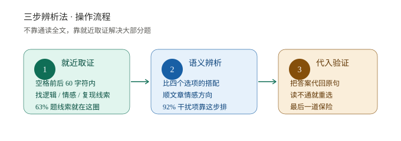
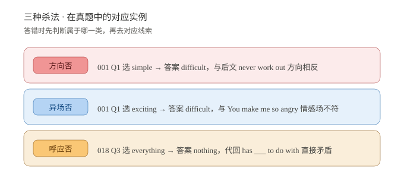
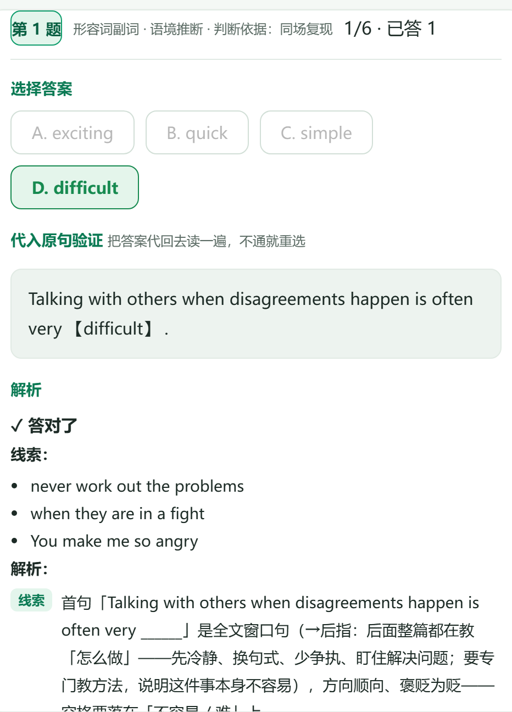
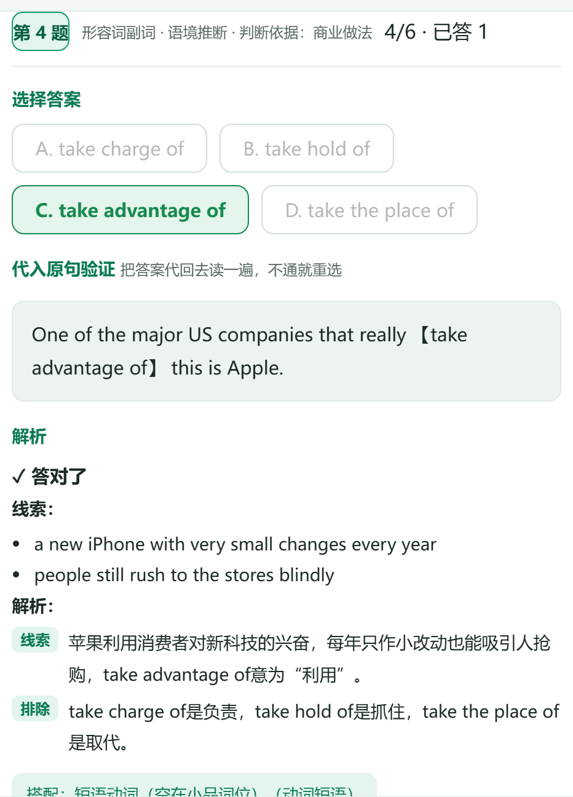
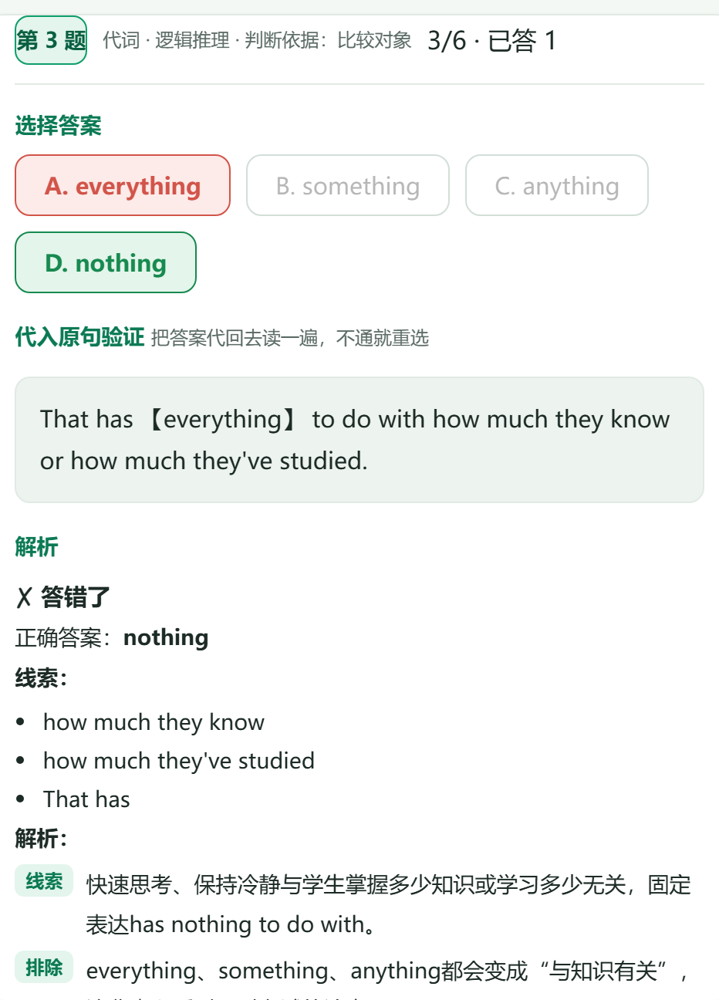

上海中考 · 真题逐空 · 前后文取证
不是你语感差，是没人告诉你怎么找答案
专为读得懂却总选错、全凭语感蒙、线索看不清的同学设计。逐空拆解前后文证据，讲清线索定位、干扰项排除和判断依据，学一篇会一篇。
每道题都有证据可复核
今日学习建议 20 分钟
先看线索，再选答案
今天从「词汇复现」开始
今天从「词汇复现」开始
学习路径
按顺序练，效果更稳定
从方法到真题，三步建立解题感
01 · 先学方法
知识点讲解
五维一体方法讲义 · 11 讲 / 27 课技法 · 学完即练
进入讲义 →
02 · 同步巩固
知识点同步练习
300 题真题靶向精练 · 按课同步 · 先答后揭，提交后亮出原文证据
开始精练 →
03 · 真题迁移
中考真题训练
海量真题 · 逐空复核 · 五步法 · 可打印空白练习卷
进入真题库 →
本系统仅收录 上海市 中考完形填空题目，按真题年份与来源逐篇标注。每篇均含可验证的线索证据，共 33 篇 / 198 道。
没有符合条件的篇目
试试调整筛选条件，或者切换到「全部」。
第一步
首尾定调
读全文之前，先看首尾句，判断文章往哪走
首句 · 起
尾句 · 合
已给：首尾句
待判断：中段走向
已揭晓：走向曲线
这篇文章的走向是？
定调成功
完形解题心法 · 来自 33 篇的实测
完形 33 篇 198 题中，92.3% 的干扰项在原文里根本没出现过。所以「回原文找词」这条路 92% 的情况下走不通——真正提分靠的是 就近取证 + 语义辨析。



真题示范 · 三道典型错例



知识点训练中心
每个知识点包含讲解和 5-10 道专项训练题。从具体技能开始，一道一道练透。
错题本
自动收集答错的题。点击「回看」直接跳回对应文章那道题。
还没有错题
做错的题会自动收集到这里，方便针对性复习。
训练进度
记录你在本设备上的做题数据。换浏览器或清缓存会丢失。
生词本
在正文里双击任意单词，会自动生成一张词汇卡并打开有道词典。卡片正面是单词，点一下翻面看出处原句。